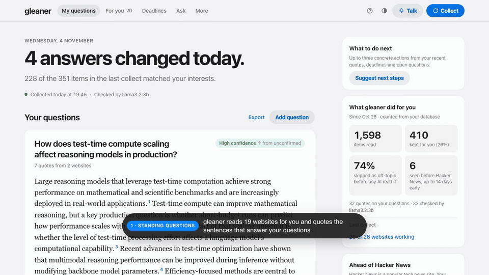

Gleaner
Oct to Nov 2026Meta Global AI Developer Hackathon (Cerebral Valley) · Solo, Indie track
A local first research assistant that reads arXiv, Hacker News, GitHub releases and blogs, and keeps your standing questions answered with word for word, linked quotes. No quote, no claim.
- Filter cascade of rules, MinHash deduplication, an embedding gate, a prompt injection screen and a local Llama 3.2 judge.
- Measured small models on real items: the 3B model accepted a sentence under the wrong question 1 time in 21, the 1B model 21 of 21. So models only answer yes or no, and code does the rest.
- Muse Spark cited answers, web search for new feeds, voice control in about 1.5 s per command, and an MCP server for coding agents.
1,305 items → 17 confirmed quotes · 495 offline tests
PythonLlama 3.2Muse SparkOllamaGraphflowFastAPISQLite